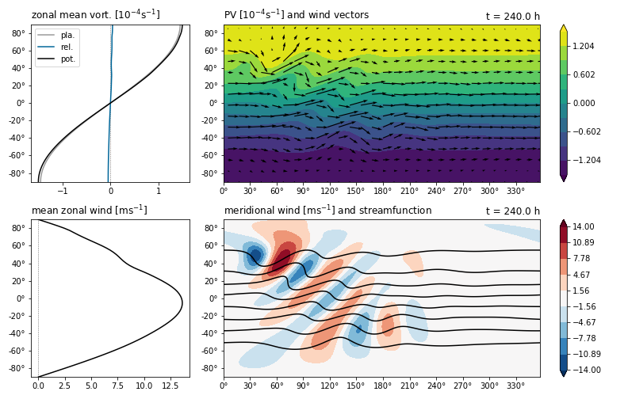

Plotting¶
Note
Plotting requires matplotlib. If matplotlib is not available, a warning will be emitted on import but some of the helper functions will still work.
Plot presets¶
All plot presets are also accessible for interactive use as methods of the State.plot interface.
- barotropic.plot.rwp_diagnostics(state, figsize=(8, 10.5), hemisphere='both', center_lon=180, v_max=None, rwp_max=None, rwp_cmap='YlOrRd')¶
3-panel plot with Rossby wave packet diagnostics.
- Parameters
state (
State) – Visualized state.figsize ((number, number)) – Figure size.
hemisphere ("both" | "N" | "S") – Which hemisphere(s) to show.
center_lon (number) – Longitude at center of maps.
v_max (number) – Override for maximum of meridional wind colorbar.
rwp_max (number) – Override for maximum of RWP colorbar.
rwp_cmap (str) – Name of colormap for RWP.
- Returns
Figure instance.
- barotropic.plot.summary(state, figsize=(11, 7), hemisphere='both', center_lon=180, pv_cmap='viridis', pv_max=None, v_max=None)¶
4-panel plot showing the model state in terms of vorticity and wind.
- Parameters
state (
State) – Visualized state.figsize ((number, number)) – Figure size.
hemisphere ("both" | "N" | "S") – Which hemisphere(s) to show.
center_lon (number) – Longitude at center of maps.
pv_cmap (str) – Name of colormap for PV.
pv_max (number) – Override for maximum of PV colorbar.
v_max (number) – Override for maximum of meridional wind colorbar.
- Returns
Figure instance.
Example plot with default configuration:

- barotropic.plot.wave_activity(state, figsize=(11, 7), hemisphere='both', center_lon=180, falwa_cmap='YlOrRd')¶
4-panel plot with Finite-Amplitude Wave Activity and PV diagnostics.
- Parameters
state (
State) – Visualized state.figsize ((number, number)) – Figure size.
hemisphere ("both" | "N" | "S") – Which hemisphere(s) to show.
center_lon (number) – Longitude at center of maps.
falwa_cmap (str) – Name of colormap for FALWA.
- Returns
Figure instance.
- barotropic.plot.waveguides(state, k_waveguides=None, hemisphere='both', klim_bounds=(- 5, 15), legend_loc=None)¶
2-panel plot showing stationary wavenumber and WKB waveguide diagnostics.
- Parameters
state (
State) – Visualized state.k_waveguides (None | number | iterable) – Wavenumber(s) for which waveguides are highlighted.
hemisphere ("both" | "N" | "S") – Which hemisphere(s) to show.
klim_bounds ((number, number)) – Bounds for wavenumber axis (x-axis).
legend_loc (str) – Where the legend is positioned.
- Returns
Figure instance.
Helper functions¶
- barotropic.plot.configure_lat_y(ax, hemisphere)¶
Set up the y-axis ticks to display longitude.
- Parameters
ax (Axes) – Axes to configure.
hemisphere (any | "N" | "S") – If “N” or “S”, show Northern or Southern hemisphere only. Otherwise show full globe.
- barotropic.plot.configure_lon_x(ax, offset=0)¶
Set up the x-axis ticks to display longitude.
- Parameters
ax (Axes) – Axes to configure.
offset (number) – Offset applied to longitudes before label generation.
- barotropic.plot.hovmoellerify(states, f)¶
Prepare data for plotting as a Hovmöller diagram.
- Parameters
states (list of
State) – Input states, ordered chronologically.f (callable) – Function applied to each :py:class`.State` in states, should return either a zonal or meridional 1D profile.
- Returns
Tuple containing x-coordinates, y-coordinates and the Hovmöller field. If f returns a meridional cross-section (determined by the length of the vector), time is on the x-axis and latitude on the y-axis. Otherwise time is on the y-axis and longitude on the x-axis.
- barotropic.plot.reduce_vectors(x, y, u, v, ny)¶
Reduce the density of points in the inputs by slicing.
- Parameters
x (array) – Coordinates of x-dimension.
y (array) – Coordinates of y-dimension.
u (array) – Input vector field x-component.
v (array) – Input vector field y-component.
ny (number) – How many points are (approximately) kept in y-dimension. The x-dimension is sliced with the same stride.
- Returns
Tuple consisting of reduced x, y, u and v.
- barotropic.plot.roll_lon(lon, center=180)¶
Center 2D fields around the given meridian.
- Parameters
lon (array) – Longitude coordinates in degrees.
center (number) – The new center longitude in degrees.
- Returns
Tuple containing a roll function that should be applied to 2D fields before plotting and a
configure_lon_x()function set up to label the zonal axis correctly when using the unmodified lon from the grid during plotting.
- barotropic.plot.symmetric_levels(x, n=10, ext=None)¶
Generate contour levels symmetric around 0.
- Parameters
x (array) – Input field for which contours are generated.
n (int) – Number of contour levels.
ext (number) – Override for the absolute value of the outermost levels.
- Returns
Array of linearly spaced contour values.